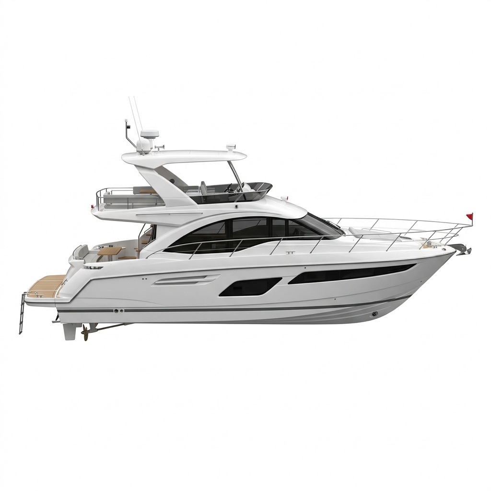
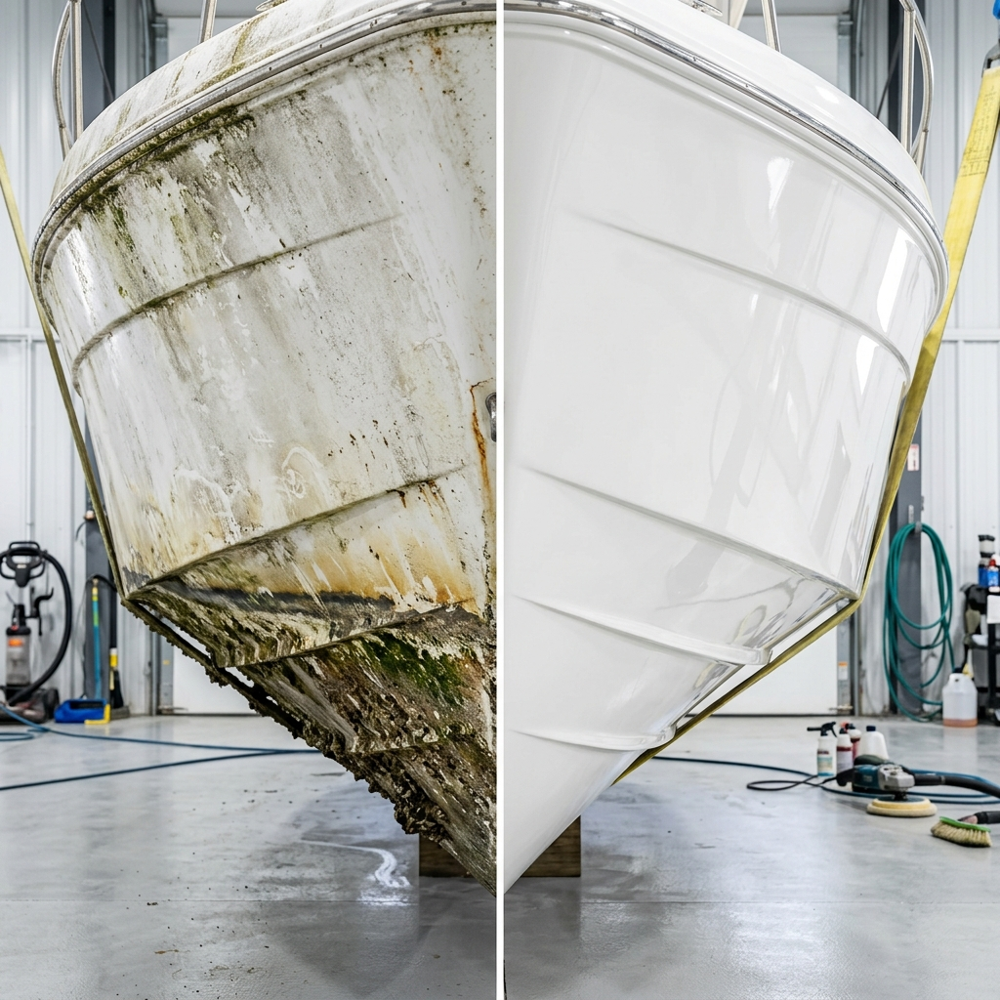

Vi passer på din investering — på vandet og i land. Professionel bådpleje med fotodokumentation, miljøcertificerede produkter og 100% tilfredshedsgaranti.
En rigtig båd kræver rigtig pleje. Klik på punkterne for at se vores premium ydelser.

Fra grundig indvendig rengøring til komplet sæsonklargøring — vi leverer et resultat du kan se og mærke.
Komplet rengøring af kahyt, salon, pantry og hoveder. Vi efterlader din båd renere end ny.
Skrog, dæk og gelcoat vaskes, poleres og beskyttes med premium marine-voks.
Professionel afrensning og påføring af miljøvenlig bundmaling. Alt materialer inkluderet.
Flertrins maskinpolering der fjerner oxidering og genskaber glansen i din gelcoat.
Komplet forårs- eller efterårsklargøring. Vi gør din båd klar — så du bare skal sejle.
Professionel inspektion med fotodokumentation og detaljeret rapport om din båds tilstand.
Vælg den plan der passer til din båd. Alle planer inkluderer fotodokumentation og digital bådjournal.
Vælg tid og ydelse direkte på vores side.
Vi vurderer din båds tilstand og behov.
Du modtager en plan og tidsestimat.
Professionel behandling med premium produkter.
Fotoreport og tilstandsrapport sendes til dig.

"Jeg har aldrig set min Bavaria så flot. MARIN leverer langt over hvad jeg forventede — og fotorapporten er et genialt touch."
"Endelig nogen der tager det seriøst. Premium-abonnementet er det bedste jeg har gjort for min båd. Kan varmt anbefales."
"Bundmalingen var upåklageligt udført, og det hele blev dokumenteret med billeder. Sådan skal det gøres."
Ingen forpligtelser. Vi vurderer din båd, giver et ærligt tilbud, og du beslutter dig i fred og ro.